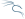

7 proyectos publicadosVelos todos
Desarrollador de webs, 3D e IA
Soy s0k1x. Hago webs para empresas y mis propias herramientas: un kit de 35 skills para agentes de código, un visor de casas en 3D y un Windows 11 propio.
Webs y apps publicadas
Cuatro webs publicadas. Todas se abren en el navegador.
Más proyectos
Mi estudio web, una app para clases y una herramienta de seguridad con el código abierto.
- SOKIX ToolkitBash · Python
Framework de seguridad ofensiva para Kali Linux: reconocimiento, OSINT, red team y pruebas web, con informes exportables.
- Aurevix WebEstudio web
Mi estudio de webs para negocios: diseños por sector, presupuestos, contratos con firma y una app para el equipo.
- UnuviaApp de clase
Tu aula, organizada: calendario, tareas, horario, notas, fotos y chat de cada clase en una app.
Trabajo con


